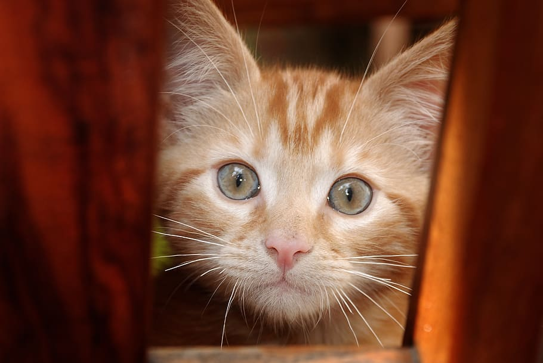

Skip To Main Content
Home
Cat types I like
Cat toys I like
Types of cats that I like
About
Here are some types of cats that I like: (For more information about each type, please click on their picture)

British Shorthair
Maine Coon
Birman
Siberian